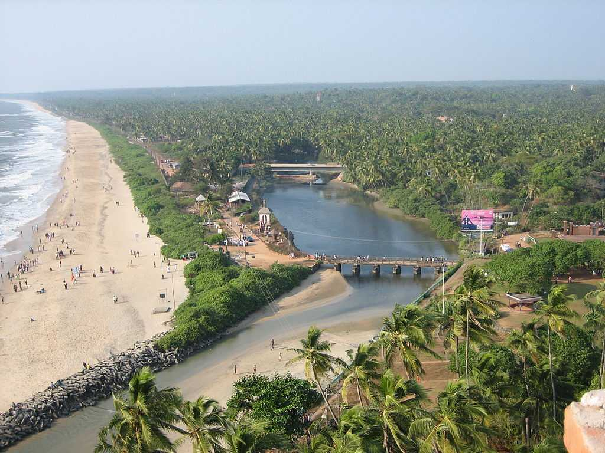

Major Attractions



Kannur district derived its name from the location of its headquarters at Kannur town. The old name ‘Cannanore’ is the anglicised form of the Malayalam word Kannur. According to one opinion, ‘Kannur’ is a derivation from Kanathur, an ancient village, the name of which survives even today in one of the wards of Kannur Municipality.
The earliest evidence of human habitation in the district are rock-cut caves and megalithic burial sites of the Neolithic age. The Taliparamba-Kannur-Thalassery area abounds in rock-cut caves, dolmens, burial stone circles and menhirs, all of megalithic burial order. The district was part of the Chera kingdom, which ruled most of Kerala during the first several centuries CE. Later Kannur was the capital of the Kolattiri Rajas, whose kingdom had trading relations with Arabia and Persiain the 12th century and 13th centuries.
Steeped in the distinctive local art forms like Theyyam, Kannur still has an aura of the bygone colonial era. The deep footprints of the Dutch, the Portuguese, the British and the Mysore Sultanate are still imbibed into the town and can be witnessed all around. The town blessed with exceptional art of weaving that has earned it the title of the land of loons and huge cashew trees perhaps rooted by Portuguese